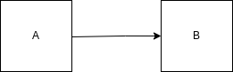
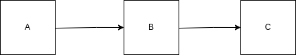

knitr::opts_chunk$set(
collapse = TRUE)This vignette provides a detailed overview of of the query
language used to find packets and use them as dependencies of other
packets. You may prefer to start with
vignette("dependencies")
Orderly includes a query DSL (domain specific language), extending
the one used by version 1 of orderly (see orderly1::orderly_search()).
Queries are used in identifying ids to pull in as dependencies, so rather than providing an identifier, you might want to depend on
- the most recent copy of a packet with a particular name
- …produced in some date range
- …with some particular set of parameter values
- …that produced a particular file
- …that was depended on by some other packet
Structure of queries
The most simple query is
latest()which finds the most recent packet; this is unlikely to be very useful without scoping - see below.
More complex queries are expressed in a syntax that is valid R (this is also valid Julia and close to valid Python). A complex query is composed of “tests”
name == "some_name"
parameter:x > 1Every “test” uses a boolean operator (<,
>, <=, >=,
==, or !=) and the left and right hand side
can be one of:
- a lookup into the outpack metadata (
parameter:xis the value of a parameter calledx,nameis the name of the packet, andidis the id of a packet) - a lookup into the provided data
pars(this:xis the value ofpars$x) - a literal value (e.g.,
"some_name",1, orTRUE)
Tests can be grouped together (, !,
&&, and || as you might expect:
-
parameter:x == 1 || parameter:x == 2finds packets where the parameterxwas 1 or 2 -
name == "data" && parameter:x > 3finds packets called “data” where parameterxis greater than 3 -
(parameter:y == 2) && !(parameter:x == 1 || parameter:x == 2)finds where parameteryis 2 and parameterxis anything other than 1 or 2 (could also be written(parameter:y == 2) && (parameter:x != 1 && parameter:x != 2))
There are four other functions
-
latest(expr)finds the latest packet satisfyingexpr- it always returns a length 1 character, but this isNA_character_if no suitable packet is found. If noexpris given then the latest of all packets is returned. -
single(expr)is likelatest(expr)except that it is an error ifexprdoes not evaluate to exactly one packet id -
usedby(expr, FALSE)whereexpris either a literalidor an expression which returns 1id. This finds all packets which were used in generation of packet withidreturned fromexpr(see dependencies section for more details).
Special simple queries
There are two shorthand queries:
-
latestis equivalent tolatest()(most useful when applied with a scope) - a string matching the regular expression for an id
(
^([0-9]{8}-[0-9]{6}-[[:xdigit:]]{8})$) is equivalent tosingle(id == "<id>")where"<id>"is the string provided)
Scoping queries
WARNING: we may remove this
Scoping queries can be used as a shorthand for filtering the returned
packets. In the future they could be used to reduce the set of packets
that are searched over to speed up query evaluation. They join together
with the main query as (scope) && (expr), except
when the expr is a call to latest or
single. In this case they combine as
latest((scope) && (expr)) or
single((scope) && (expr)). This is useful if you
want to limit the search to a particular name or location but perform
some more detailed search.
For example, the query
orderly_query(quote(parameter:x == 1), scope = quote(name == "data"))is equivalent to
orderly_query(quote(parameter:x == 1 && name == "data"))orderly2 uses this functionality when resolving
dependencies with orderly2::orderly_dependency.
Scoping on name
Very often users will want to scope by name so instead of passing
scope argument there is a shorthand name
argument for usability.
orderly_query(quote(parameter:x == 1), name = "data")Which is the equivalent of
orderly_query(quote(parameter:x == 1), scope = quote(name == "data"))Dependencies
If we have 2 packets, where B depends on output from A (i.e. we call
(id_a, ...) when running packet B) we can draw this as.

We could equivalently say
- A is a dependency of B, B depends on A
- A is used by B , B uses A
- A is a parent of B, B is a child of A
With the tree of dependencies among our packets we might want to
search for packets which have been used by another packet. We can use
the query function usedby(id) to list all packets which are
used by id. This will search recursively through all
packets used by id and its parents and its parents’ parents
and so on.
The optional second arg immediate is FALSE
by default, if set to TRUE then we search only for
immediate (e.g. level 1) dependencies.
Being able to search through dependencies like this means if we have some packet structure like

and we want to know the id of A which was
used by C we can find this using
orderly_search
orderly_search(quote(usedby(latest(name == "C"))), name = "A")usedby can be combined with groupings and scope:
orderly_search(quote(usedby(latest(name == "C")) && parameter:year == 2022),
name = "A")The depth that usedby will recurse can be controlled by
setting the depth e.g.
orderly_search(quote(usedby(latest(name == "C"), depth = 1)), name = "A")will search for just immediate parents of C.
depth can be any positive integer, by default
depth will recurse until it finds all parents.
usedby can be simplified by using subqueries. Subqueries
are denoted by curly braces {} and can either be named and
passed in subquery arg or can be anonymous. The query below
is equivalent to the above but uses a subquery for C.
orderly_search(quote(usedby({C}) && parameter:year == 2022),
name = "A",
subquery = list(C = quote(latest(name == "C"))))There are two important things to note about usedby:
- The query inside
usedbywill search the entire index, ignoring anyscopeornameparameters. This is because we want to find all packets which are used bylatestC. If the subqueryCwas scoped this would return no results. - The query inside
usedbymust return a single result. To ensure this it must either be a literalid, a call tolatestor a call tosingle
As well as searching up the dependency tree using usedby
we can search down with the uses function. In the same
setup above with reports A, B and
C if we want to know the id of C
which uses A we can find this by using
orderly_search(quote(uses(latest(name == "A"))),
name = "C")uses and usedby can be combined to search
more complex arrangements of dependencies. If we have something like

If we want to search for the version of E which depends
on the version of A which was used in the latest
C we can do this via
orderly_search(
quote(latest(uses(single(usedby(latest(name == "C")) && name == "A")))),
name = "E")This searches up the tree from C to A and
then down the tree to find the version of E. Note that is
is important we added the name == "A" condition here, if
that was missing usedby(latest(name == "C")) would also
return B and single would throw an error
because we have multiple packets.
We can also search up the tree and then down to find A
from D e.g.
orderly_query(
quote(usedby(single(uses(name == "D")))),
name = "A")note as E is the only packet which uses D
we do not need to add a name == "E" clause.
We can combine usedby and uses in more
complex searches, such as to find D from C we
could run
orderly_query(
quote(usedby(single(uses(single(usedby(latest(name == "C")) && name == "A"))) && name == "E"))),
name = "D")